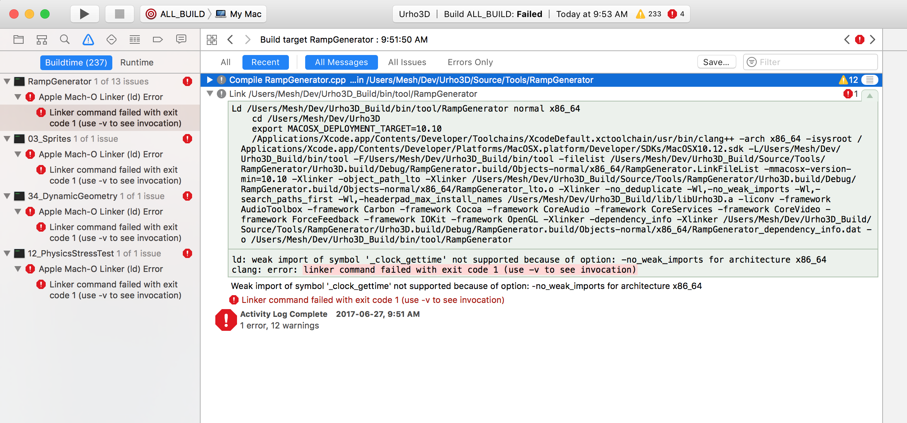

elissa-ross
Hello!
I’m having problems building Urho for a macOS deployment target of 10.11 and earlier. I am using Xcode, and running 10.12. I am building for Standard architectures. When I select the 10.11 deployment target I get number of linker errors (see image). Any suggestions gratefully received…
